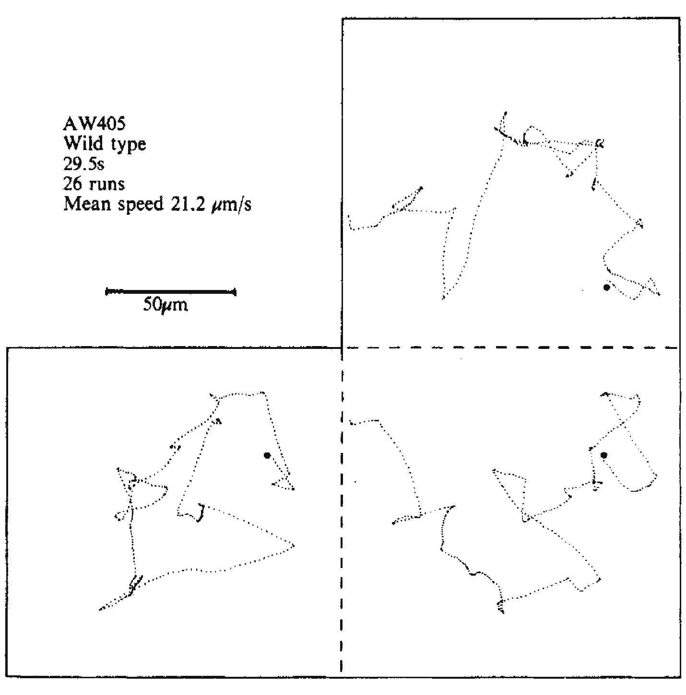
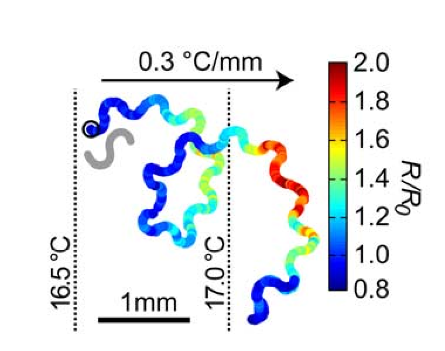
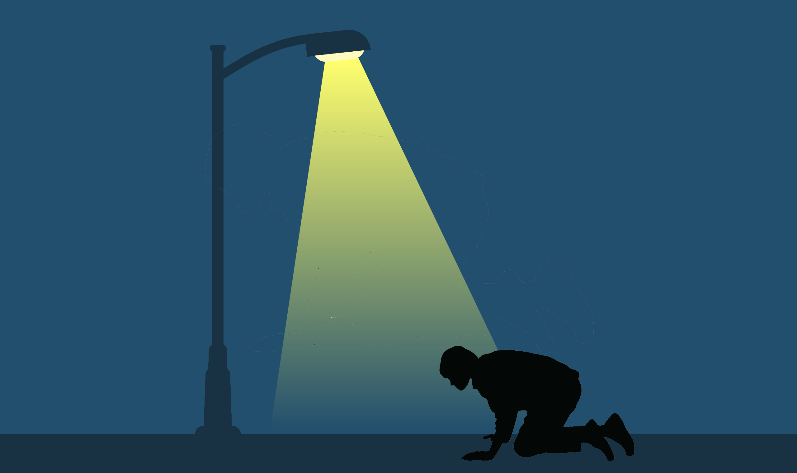
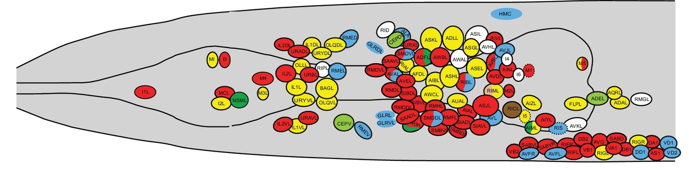

Chemotaxis
Aravi Samuel

E. coli
Tracking cells

If life is getting better, enjoy it more.
If life is getting worse, don't worry about it.
Sensorimotor behavior

Sensorimotor circuit

C. elegans


Varshney et al. (2011)
A dynamical connectome
Witvliet et al. (2021)
Brains get bigger
Topology stays the same

Witvliet et al. (2021)
More synapses, more connections

Variable connectivity

Tracking cells

Clark et al. (2007)

“Science is a bit like the joke about the drunk who is looking under a lamppost for a key that he has lost on the other side of the street, because that’s where the light is.”
- Noam Chomsky
Whole-brain imaging
Ahrens et al. (2013)
Many ORNs

Bargmann and Horvitz (1993)
Microfluidic manifolds

Lin et al. (2023)
Manifold responses

Lin et al. (2023)
Combinatorial codes?

Lin et al. (2023)
Brain-Wide Imaging during Chemotaxis

Neuronal atlases

Multicolor fluorescence atlases

John Calarco, Mei Zhen
Yemini et al. (2021)
Brain-wide Imaging
Freely-moving and immobilized worms

Chemotaxis to diacetyl and IAA

Chemotaxis to diacetyl and IAA

Two behavioral states

Chen et al. (2025)
Run durations between and within pirouettes

Maintaining orientation

Pirouettes correct orientation

Runs wander

Turns within pirouette

Each turn is a coin flip

Brain-wide differences between
immobilized and moving worms

Focused differences between
chemotaxis and free navigation

Different neuron-behavior correlations

Different neuron-behavior correlations


AWA senses concentration changes

Adaptive dynamical threshold of sensitivity

Levy and Bargmann (2020)
AIB is complicated


Ray and Gordus (2025)
Acknowledgments

Team fly
David Zimmerman
Stan Lazopulo
Team worm
Helena Casademunt
Ishaan Chandok
Team bacteria
Alina Vravioiu
Gabriel Hosu
Team undergrad
Rafael Jacobsen
Rahm Bharara